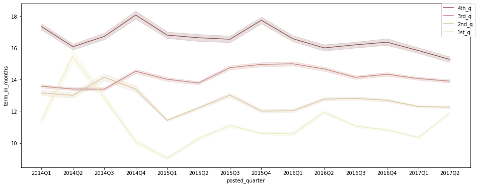

Kiva Crowdfunding 1
Table of contents
*분석 대상 데이터셋: Kiva Crowdfunding Data
- 데이터셋 출처
- kiva.org: 세계 각국의 경제적으로 어려운 사람들에게 돈을 빌려주는 online crowdfunding platform
- kiva_loans.csv: 2014.01.01~2017.07.26 사이에 kiva에 올라온 loan 정보 데이터. (671,205개의 row)
데이터 파악
# 필요한 라이브러리 import
import pandas as pd
import numpy as np
from matplotlib import pyplot as plt
import seaborn as sns
import scipy.stats as stats
kiva_df = pd.read_csv('data/kiva_loans.csv')
kiva_df.head()
| id | funded_amount | loan_amount | activity | sector | use | country_code | country | region | currency | partner_id | posted_time | disbursed_time | funded_time | term_in_months | lender_count | tags | borrower_genders | repayment_interval | date | |
|---|---|---|---|---|---|---|---|---|---|---|---|---|---|---|---|---|---|---|---|---|
| 0 | 653051 | 300 | 300 | Fruits & Vegetables | Food | To buy seasonal, fresh fruits to sell. | PK | Pakistan | Lahore | PKR | 247 | 2014-01-01 06:12:39+00:00 | 2013-12-17 08:00:00+00:00 | 2014-01-02 10:06:32+00:00 | 12 | 12 | nan | female | irregular | 2014-01-01 |
| 1 | 653053 | 575 | 575 | Rickshaw | Transportation | to repair and maintain the auto rickshaw used in their business. | PK | Pakistan | Lahore | PKR | 247 | 2014-01-01 06:51:08+00:00 | 2013-12-17 08:00:00+00:00 | 2014-01-02 09:17:23+00:00 | 11 | 14 | nan | female, female | irregular | 2014-01-01 |
| 2 | 653068 | 150 | 150 | Transportation | Transportation | To repair their old cycle-van and buy another one to rent out as a source of income | IN | India | Maynaguri | INR | 334 | 2014-01-01 09:58:07+00:00 | 2013-12-17 08:00:00+00:00 | 2014-01-01 16:01:36+00:00 | 43 | 6 | user_favorite, user_favorite | female | bullet | 2014-01-01 |
| 3 | 653063 | 200 | 200 | Embroidery | Arts | to purchase an embroidery machine and a variety of new embroidery materials. | PK | Pakistan | Lahore | PKR | 247 | 2014-01-01 08:03:11+00:00 | 2013-12-24 08:00:00+00:00 | 2014-01-01 13:00:00+00:00 | 11 | 8 | nan | female | irregular | 2014-01-01 |
| 4 | 653084 | 400 | 400 | Milk Sales | Food | to purchase one buffalo. | PK | Pakistan | Abdul Hakeem | PKR | 245 | 2014-01-01 11:53:19+00:00 | 2013-12-17 08:00:00+00:00 | 2014-01-01 19:18:51+00:00 | 14 | 16 | nan | female | monthly | 2014-01-01 |
- funded_amount: amount disbursed by Kiva to the field agent (USD)
- loan_amount: amount disbursed by the field agent to the borrower (USD)
- country_code: ISO country code
- posted_time: the time at which the loan is posted on Kiva by the field agent
- disbursed_time: the time at which the loan is disbursed by the field agent to the borrower
- funded_time: the time at which the loan posted to Kiva gets funded by lenders completely
- term_in_months: the duration for which the loan was disbursed in months
- date: posted_time에서 date만 추출한 것. (Kiva에 올라온 날짜)
데이터 정보 파악
-
중복값 확인
# 중복값이 포함되어 있나 확인 (모든 열의 데이터가 같은 경우) kiva_df.duplicated().sum()0 -
null값 여부, data type 확인
kiva_df.info()<class 'pandas.core.frame.DataFrame'> RangeIndex: 671205 entries, 0 to 671204 Data columns (total 20 columns): # Column Non-Null Count Dtype --- ------ -------------- ----- 0 id 671205 non-null int64 1 funded_amount 671205 non-null float64 2 loan_amount 671205 non-null float64 3 activity 671205 non-null object 4 sector 671205 non-null object 5 use 666973 non-null object 6 country_code 671197 non-null object 7 country 671205 non-null object 8 region 614405 non-null object 9 currency 671205 non-null object 10 partner_id 657698 non-null float64 11 posted_time 671205 non-null object 12 disbursed_time 668809 non-null object 13 funded_time 622874 non-null object 14 term_in_months 671205 non-null float64 15 lender_count 671205 non-null int64 16 tags 499789 non-null object 17 borrower_genders 666984 non-null object 18 repayment_interval 671205 non-null object 19 date 671205 non-null object dtypes: float64(4), int64(2), object(14) memory usage: 102.4+ MB -
funded_amount와 loan_amount의 관계를 확인
print('funded = loan: ', len(kiva_df[kiva_df['funded_amount'] == kiva_df['loan_amount']])) print('funded < loan: ', len(kiva_df[kiva_df['funded_amount'] < kiva_df['loan_amount']])) print('funded > loan: ', len(kiva_df[kiva_df['funded_amount'] > kiva_df['loan_amount']]))funded = loan: 622875 funded < loan: 48328 funded > loan: 2- funded_amount: Kiva → field agent // loan_amount: field_agent → borrower
- 보통 field agent가 먼저 borrower에게 필요한 금액을 빌려주고, 그 다음 Kiva에 post헤서 자금을 모으는 형태인 듯.
- loan_amount만큼 funded_amount가 찬 경우가 가장 많고, 아직 loan_amount만큼 차지 않는 경우는 48,328건
- loan_amount보다 funded_amount가 많은 경우도 이례적으로 2건 있으나, 오기입인지 실제로 loan_amount를 초과해서 자금을 모을 수 있는지는 불분명.
-
funded_time의 null값을 확인
funded_time_na = kiva_df[kiva_df['funded_time'].isna()] print('funded = loan: ', len(funded_time_na[funded_time_na['funded_amount'] == funded_time_na['loan_amount']])) print('funded < loan: ', len(funded_time_na[funded_time_na['funded_amount'] < funded_time_na['loan_amount']])) print('funded > loan: ', len(funded_time_na[funded_time_na['funded_amount'] > funded_time_na['loan_amount']]))funded = loan: 1 funded < loan: 48328 funded > loan: 2- funded_time: Kiva에 post된 loan이 완전히 모금된 시간을 기록
- loan_amount만큼 아직 funded_amount가 다 차지 않은 경우, funded_time이 아직 기록될 수 없어서 null값으로 남아 있음.
- 이례적으로 funded_amount >= loan_amount인 경우도 3건 있음: 모금이 완료되었는데도 해당 시간을 미처 기록하지 못한 듯.
datetime 형식 처리
- datetime 정보를 담은 컬럼들을 datetime type으로 변환해줌
kiva_df['posted_time'] = pd.to_datetime(kiva_df['posted_time']) kiva_df['disbursed_time'] = pd.to_datetime(kiva_df['disbursed_time']) kiva_df['funded_time'] = pd.to_datetime(kiva_df['funded_time']) # 잘 변환되었나 확인 kiva_df[['posted_time', 'disbursed_time', 'funded_time']].dtypesposted_time datetime64[ns, UTC] disbursed_time datetime64[ns, UTC] funded_time datetime64[ns, UTC] dtype: object -
posted_time 정보: 미리 가공해둠
# posted_time → Month, Year, Quarter로도 묶어둠 (추이를 시각화해서 확인하기 편하도록) df['posted_month'] = df['posted_time'].dt.strftime('%Y%m') df['posted_year'] = df['posted_time'].dt.year df['posted_quarter'] = df['posted_time'].dt.to_period("Q").astype('str') df[['posted_time', 'posted_month', 'posted_year', 'posted_quarter']].head()posted_time posted_month posted_year posted_quarter 0 2014-01-01 06:12:39+00:00 201401 2014 2014Q1 1 2014-01-01 06:51:08+00:00 201401 2014 2014Q1 2 2014-01-01 09:58:07+00:00 201401 2014 2014Q1 3 2014-01-01 08:03:11+00:00 201401 2014 2014Q1 4 2014-01-01 11:53:19+00:00 201401 2014 2014Q1
funded amount 파악
# 당장 필요하지는 않은 column을 제외하고 df 구성
df = kiva_df.copy()
df.drop(['country_code', 'tags', 'date'], axis='columns', inplace=True)
funded amount 분포
plt.figure(figsize=(12, 5))
sns.kdeplot(data=df, x='funded_amount', color='#C88686');
→ outlier가 많아서 알아보기 어려우므로 특정 구간만 확대해서 다시 그려봄:
# 3사분위값 + 1.5IQR = 1875
plt.figure(figsize=(12, 5))
sns.kdeplot(data = df[df['funded_amount'] <= 1875], x='funded_amount', color='#C88686');
- 대체로 250 USD 정도의 funding이 많고, 75%가 900 USD 이하의 규모.
df['funded_amount'].describe()
count 671205.000000
mean 785.995061
std 1130.398941
min 0.000000
25% 250.000000
50% 450.000000
75% 900.000000
max 100000.000000
Name: funded_amount, dtype: float64
funded amount 추이
- 분기별 총 funded_amount
- 월별로 그리기에는 기간이 너무 길어 시각화해서 제대로 표현하기 어려우므로, 분기별 추이로 시각화
- 2017Q3은 2017.07.26까지의 기록밖에 없으므로 제외하고 시각화
plt.figure(figsize=(16, 6)) sns.lineplot(data=df[df['posted_quarter'] != '2017Q3'], x='posted_quarter', y='funded_amount', color='#C88686', estimator='sum', ci=None) plt.ylim(30000000, 45000000); -
분기별 총 post된 fund수
plt.figure(figsize=(16, 6)) sns.lineplot(data=df[df['posted_quarter'] != '2017Q3'], x='posted_quarter', y='funded_amount', color='#C88686', estimator='count', ci=None) plt.ylim(30000, 60000); -
분기별 평균 funded_amount
plt.figure(figsize=(16, 6)) sns.lineplot(data=df[df['posted_quarter'] != '2017Q3'], x='posted_quarter', y='funded_amount', color='#C88686') # estimator='mean'이 default값 plt.ylim(600, 1000);- 분기별 총 funded_amount는 증가하는 추세
- 평균 funded_amount는 감소세이지만, post되는 fund의 수가 증가 추세여서 총 amount가 함께 증가.
- 다만, 2017Q2에는 post된 fund의 수가 증가했음에도 평균 funded_amount가 크게 감소해 총 funded_amount도 크게 감소.
funded amount와 loan amount의 차이 비교
-
funded_amount와 loan_amount의 변화 추이를 비교해서 시각화
plt.figure(figsize=(16, 6)) sns.lineplot(data=df[df['posted_quarter'] != '2017Q3'], x='posted_quarter', y='funded_amount', color='#C88686', estimator='sum', ci=None) sns.lineplot(data=df[df['posted_quarter'] != '2017Q3'], x='posted_quarter', y='loan_amount', color='#D7CCAD', estimator='sum', ci=None) plt.ylim(30000000, 50000000); -
loan_amount - funded_amount 차액 변화를 확인
- loan_amount에서 funded_amount를 뺀 금액이 어떻게 변화하는지 시각화
quarterly_amount = df.groupby(['posted_quarter'])[['funded_amount', 'loan_amount']].sum().reset_index() quarterly_amount['loan-funded'] = quarterly_amount['loan_amount'] - quarterly_amount['funded_amount'] plt.figure(figsize=(16, 6)) sns.barplot(data=quarterly_amount[quarterly_amount['posted_quarter'] != '2017Q3'], x='posted_quarter', y='loan-funded', color='#C88686');- 2017Q2에는 loan_amount 자체도 조금 감소하긴 했으나 별 문제는 없어 보임.
- 2017Q2에 funded_amount 총액이 크게 감소한 것은 아직 loan_amount만큼 다 채워지지 않은 건들이 남아 있기 때문인 듯. 조금 더 시간이 있으면 funding이 늘어날 수 있으므로 시간을 두고 추이를 확인해볼 필요가 있다고 판단됨.
- 특이하게도 연도별 Q1(1분기)에는 loan_amount와 funded_amount 사이의 차이가 유독 작게 나타남. 주로 연초에 crowdfunding 등 새로운 계획을 실천하는 사람이 많이 때문?
조건별 funded amount 확인
국가별
-
funded amount가 가장 높은 국가 Top 10 확인
# funded_amount 합산 금액 내림차순으로 Top 10 국가만 시각화 loans_country = df.groupby('country')[['funded_amount']].sum().reset_index() loans_country.sort_values(by='funded_amount', ascending=False, inplace=True) loans_country.head(10) plt.figure(figsize=(12, 5)) sns.barplot(data=loans_country.head(10), x='country', y='funded_amount', palette='pink');- kiva에서 fund 받은 금액이 가장 많은 나라는 Philippines
-
분기별 국가별 funded amount
quarterly_loans_country = df.groupby(['posted_quarter', 'country'])[['funded_amount']].sum().reset_index() # 2017Q3은 7월밖에 없고, 그나마 7월도 26일까지밖에 없으므로 제외 quarterly_loans_country = quarterly_loans_country[quarterly_loans_country['posted_quarter'] != '2017Q3'] # 각 기간별로, funded amount top 5에 포함되는 국가들만 따로 저장 quarters = quarterly_loans_country['posted_quarter'].unique() top_countries_set = set() for q in quarters: temp = quarterly_loans_country[quarterly_loans_country['posted_quarter'] == q] temp_set = set(temp.sort_values(by='funded_amount', ascending=False).head()['country'].to_list()) top_countries_set.update(temp_set) # 위에서 정리한 top_countries_set에 포함된 국가에 한해서 시각화 plt.figure(figsize=(16, 7)) sns.lineplot(data=quarterly_loans_country[quarterly_loans_country['country'].isin(top_countries_set)], x='posted_quarter', y='funded_amount', hue='country', palette='Set2'); # legend를 box 밖으로 빼 줌 plt.legend(bbox_to_anchor=(1.01, 1), borderaxespad=0);- 2014Q1을 제외한 모든 기간에 Philippines이 fund 받은 금액이 가장 많음
- Kenya의 경우, 특히 Q1(1분기)를 위주로 funded amount가 증가하는 트렌드를 보임
- Cambodia의 경우 2017Q1, 2017Q2에 큰 funded amount 상승세를 보여, 추후 지켜봐야 할 듯.
+) Kenya의 sector별 funded_amount 확인
kenya_sector = df[df['country'] == 'Kenya'].groupby(['sector'])[['funded_amount']].sum().sort_values(by='funded_amount', ascending=False) kenya_sector['percentage(%)'] = kenya_sector['funded_amount'] / kenya_sector['funded_amount'].sum() * 100 kenya_sector.head()sector funded_amount percentage(%) Agriculture 16484185 51.12 Food 4603345 14.27 Retail 4232640 13.13 Services 1896535 5.88 Clothing 1547850 4.80 - Kenya의 경우 funded amount 중 약 51%가 Agriculture(농업) 관련이여서 1분기에 특히 fund가 증가하는 추세가 나타나는 듯.
Sector별
-
funded amount가 가장 높은 sector Top 10 확인
# funded_amount 합산 금액 내림차순으로 정렬 후 시각화 loans_sector = df.groupby('sector')[['funded_amount']].sum().reset_index() loans_sector.sort_values(by='funded_amount', ascending=False, inplace=True) plt.figure(figsize=(12, 5)) sns.barplot(data=loans_sector, x='sector', y='funded_amount', palette='pink') plt.xticks(rotation=40);- 가장 많은 funded amount를 보이는 sector는 Agriculture, Food, Retail.
-
분기별 sector별 funded amount
quarterly_loans_sector = df.groupby(['posted_quarter', 'sector'])[['funded_amount']].sum().reset_index() # 2017Q3은 7월밖에 없고, 그나마 7월도 26일까지밖에 없으므로 제외 quarterly_loans_sector = quarterly_loans_sector[quarterly_loans_sector['posted_quarter'] != '2017Q3'] # 각 기간별로, funded amount top 5에 포함되는 sector들만 따로 저장 quarters = quarterly_loans_sector['posted_quarter'].unique() top_sectors_set = set() for q in quarters: temp = quarterly_loans_sector[quarterly_loans_sector['posted_quarter'] == q] temp_set = set(temp.sort_values(by='funded_amount', ascending=False).head()['sector'].to_list()) top_sectors_set.update(temp_set) # 위에서 정리한 top_sectors_set에 포함된 sector에 한해서 시각화 plt.figure(figsize=(16, 7)) sns.lineplot(data=quarterly_loans_sector[quarterly_loans_sector['sector'].isin(top_sectors_set)], x='posted_quarter', y='funded_amount', hue='sector', palette='Set2'); # legend를 box 밖으로 빼 줌 plt.legend(bbox_to_anchor=(1.01, 1), borderaxespad=0);- Agriculture 섹터의 경우, 주로 Q1 ~ Q2의 기간에 특히 funded amount가 증가하는 트렌드를 보임
- Food, Retail 섹터는 꾸준히 많은 funded amount를 보임
-
국가별 sector별 funded amount
# funded amount Top 10 country만 따로 저장 top_countries = df.groupby('country')[['funded_amount']].sum().sort_values(by='funded_amount', ascending=False).head(10).index # funded amount 내림차순으로 sector 순서 정렬 sectors_order = df.groupby('sector')[['funded_amount']].sum().sort_values(by='funded_amount', ascending=False).index loans_country_sector = pd.pivot_table(df, index='country', columns='sector', values='funded_amount', fill_value=0, aggfunc='sum') loans_country_sector = loans_country_sector[loans_country_sector.index.isin(top_countries)] # top 10 country만 대상으로 자름 loans_country_sector = loans_country_sector[sectors_order] # 전체 loan amount가 가장 높은 sector부터 내림차순 정렬 loans_country_sector = loans_country_sector.T loans_country_sector = loans_country_sector[top_countries] # 전체 loan amount가 가장 높은 country부터 내림차순 정렬 # 값을 normalize(정규화)해서 비교 (heatmap으로 보다 명확하게 비교할 수 있게 표현하기 위함) from sklearn import preprocessing scaler = preprocessing.MinMaxScaler() normalized_data = scaler.fit_transform(loans_country_sector) loans_cntry_sctr_normalized = pd.DataFrame(normalized_data, columns=loans_country_sector.columns, index=loans_country_sector.index) # heatmap으로 시각화 plt.figure(figsize=(14, 9)) sns.heatmap(loans_cntry_sctr_normalized, annot=True, cmap='pink_r', fmt='.2f');- funded amount Top 10 국가 중 Kenya, El Salvador, Cambodia, Ecuador는 Agriculture 섹터로 funding 받은 금액이 가장 많음
- funded amount Top 10 국가 중 Peru, Paraguay, Bolivia, Rwanda는 Food 섹터로 funding 받은 금액이 가장 많음
- 가장 funded amount가 많은 국가인 Philippines은 Retail 섹터로 받은 금액이 가장 많음
- United States는 이례적으로 Services 섹터로 받은 금액이 가장 많음
Activity별
-
funded amount가 가장 높은 activity Top 10 확인
# funded_amount 합산 금액 내림차순으로 Top 10 activity만 확인 loans_activity = df.groupby(['sector', 'activity'])[['funded_amount']].sum().reset_index() loans_activity.sort_values(by='funded_amount', ascending=False, inplace=True) loans_activity.head(10)sector activity funded_amount 7 Agriculture Farming 47900500 94 Retail General Store 35555135 0 Agriculture Agriculture 25530735 54 Food Food Production/Sales 24326140 112 Retail Retail 23911950 24 Clothing Clothing Sales 22569725 68 Housing Personal Housing Expenses 20166525 37 Education Higher education costs 19012400 57 Food Grocery Store 14299895 10 Agriculture Livestock 13699275 → 시각화
plt.figure(figsize=(14, 5)) sns.barplot(data=loans_activity.head(10), x='activity', y='funded_amount', palette='pink') plt.xticks(rotation=20);- Agriculture 섹터에 속하는 ‘Farming’ activity가 가장 많은 funded amount를 보임
-
분기별 activity별 funded amount
quarterly_loans_activity = df.groupby(['posted_quarter', 'activity'])[['funded_amount']].sum().reset_index() # 2017Q3은 7월밖에 없고, 그나마 7월도 26일까지밖에 없으므로 제외 quarterly_loans_activity = quarterly_loans_activity[quarterly_loans_activity['posted_quarter'] != '2017Q3'] # 각 기간별로, funded amount top 5에 포함되는 activity들만 따로 저장 quarters = quarterly_loans_activity['posted_quarter'].unique() top_activities_set = set() for q in quarters: temp = quarterly_loans_activity[quarterly_loans_activity['posted_quarter'] == q] temp_set = set(temp.sort_values(by='funded_amount', ascending=False).head()['activity'].to_list()) top_activities_set.update(temp_set) # 위에서 정리한 top_sectors_set에 포함된 activity에 한해서 시각화 plt.figure(figsize=(16, 7)) sns.lineplot(data=quarterly_loans_activity[quarterly_loans_activity['activity'].isin(top_activities_set)], x='posted_quarter', y='funded_amount', hue='activity', palette='Set2'); # legend를 box 밖으로 빼 줌 plt.legend(bbox_to_anchor=(1.01, 1), borderaxespad=0);- Farming activity의 funded amount는 Q4에 가장 적고 주로 Q1 ~ Q2 기간에 증가하는 추세를 보임 (Seasonality 존재)
- General Store activity의 꾸준히 높은 funded amount를 보이는 편
-
국가별 activity별 funded amount
# funded amount Top 10 country만 따로 저장 top_countries = df.groupby('country')[['funded_amount']].sum().sort_values(by='funded_amount', ascending=False).head(10).index # funded amount 내림차순으로 activity 순서 정렬 activity_order = df.groupby('activity')[['funded_amount']].sum().sort_values(by='funded_amount', ascending=False).index # Top 10 country 각각의 Top 3 activity만 따로 저장 temp_df = df.groupby(['country', 'activity'])[['funded_amount']].sum().reset_index() top_activities = set() for country in top_countries: temp = temp_df[temp_df['country'] == country].sort_values(by='funded_amount', ascending=False).head(3) top_activities.update(set(temp['activity'].to_list())) loans_country_activity = pd.pivot_table(df, index='country', columns='activity', values='funded_amount', fill_value=0, aggfunc='sum') loans_country_activity = loans_country_activity[loans_country_activity.index.isin(top_countries)] # top 10 country만 대상으로 자름 loans_country_activity = loans_country_activity[activity_order] # 전체 loan amount가 가장 높은 activity부터 내림차순 정렬 loans_country_activity = loans_country_activity.T loans_country_activity = loans_country_activity[loans_country_activity.index.isin(top_activities)] # top_activities로 한정 loans_country_activity = loans_country_activity[top_countries] # 전체 loan amount가 가장 높은 country부터 내림차순 정렬 # 값을 normalize(정규화)해서 비교 (heatmap으로 보다 명확하게 비교할 수 있게 표현하기 위함) scaler = preprocessing.MinMaxScaler() normalized_data = scaler.fit_transform(loans_country_activity) loans_country_activity_normalized = pd.DataFrame(normalized_data, columns=loans_country_activity.columns, index=loans_country_activity.index) # heatmap으로 시각화 plt.figure(figsize=(14, 9)) sns.heatmap(loans_country_activity_normalized, annot=True, cmap='pink_r', fmt='.2f');- Kenya와 Cambodia는 Farming으로 받은 금액이 가장 많음
- Philipines는 General Store 관련 금액이 가장 많음
조건별 분포 확인
borrower genders
- 결측치는 무시하고 계산
- borrower_genders 칼럼을 type별로 묶어서 저장
- female 또는 male 한 명인 경우 그대로 적고, female 여러 명일 경우 female_group, male 여러 명일 경우 male_group, 그리고 female과 male이 섞여 있는 그룹일 경우 mixed_group으로 기재
def borrower_type(x): if type(x) != str: borrower = 'N/A' elif x == 'female': borrower = 'female' elif x == 'male': borrower = 'male' else: borr_set = set(x.split(', ')) if 'female' in borr_set: if 'male' in borr_set: borrower = 'mixed_group' else: borrower = 'female_group' else: borrower = 'male_group' return borrower df['borrower_type'] = df['borrower_genders'].apply(lambda x: borrower_type(x)) df[['borrower_genders', 'borrower_type']].head()borrower_genders borrower_type 0 female female 1 female, female female_group 2 female female 3 female female 4 female female -
borrower type별 총 funded_amount
plt.figure(figsize=(9, 5)) sns.barplot(data=df, x='borrower_type', y='funded_amount', palette='pink', estimator=np.sum, order = ['female', 'female_group', 'male', 'male_group', 'mixed_group', 'N/A']); -
borrower type별 fund count
plt.figure(figsize=(9, 5)) sns.countplot(data=df, x='borrower_type', palette='pink', order = ['female', 'female_group', 'male', 'male_group', 'mixed_group', 'N/A']); -
borrower type별 평균 funded_amount
plt.figure(figsize=(9, 5)) sns.barplot(data=df, x='borrower_type', y='funded_amount', palette='pink', order = ['female', 'female_group', 'male', 'male_group', 'mixed_group', 'N/A']);- female 혼자 빌리는 경우는 평균 funded_amount는 적지만 수 자체가 가장 많기 때문에 총 funded_amount가 가장 많음
- group으로 빌리는 경우는 수 자체는 적지만 평균 funded_amount가 많다
-
분기별 borrower type별 funded amount
borrower_loan = df.groupby(['posted_quarter', 'borrower_type'])[['funded_amount']].sum().reset_index() borrower_loan = borrower_loan[borrower_loan['posted_quarter'] != '2017Q3'] # 2017Q3은 7월밖에 없고, 그나마 7월도 26일까지밖에 없으므로 제외 plt.figure(figsize=(16, 6)) sns.lineplot(data=borrower_loan, x='posted_quarter', y='funded_amount', hue='borrower_type', palette='pink', hue_order=['female', 'female_group', 'male', 'male_group', 'mixed_group', 'N/A']) # legend를 box 밖으로 빼 줌 plt.legend(bbox_to_anchor=(1.01, 1), borderaxespad=0);- 모든 기간에 female 혼자 빌리는 형태의 funded_amount 총액이 가장 많다
-
borrower type별 activity별 funded amount
# borrower_type 중 'N/A'만 제외 borrower_type_list = list(df['borrower_type'].unique()) borrower_type_list.remove('N/A') # funded amount 내림차순으로 activity 순서 정렬 activity_order = df.groupby('activity')[['funded_amount']].sum().sort_values(by='funded_amount', ascending=False).index # Top 10 country 각각의 Top 5 activity만 따로 저장 temp_df = df.groupby(['borrower_type', 'activity'])[['funded_amount']].sum().reset_index() top_activities = set() for borrower in borrower_type_list: temp = temp_df[temp_df['borrower_type'] == borrower].sort_values(by='funded_amount', ascending=False).head(3) top_activities.update(set(temp['activity'].to_list())) loans_borrower_activity = pd.pivot_table(df, index='borrower_type', columns='activity', values='funded_amount', fill_value=0, aggfunc='sum') loans_borrower_activity = loans_borrower_activity[activity_order] # 전체 loan amount가 가장 높은 activity부터 내림차순 정렬 loans_borrower_activity = loans_borrower_activity[loans_borrower_activity.index.isin(borrower_type_list)] loans_borrower_activity = loans_borrower_activity.T loans_borrower_activity = loans_borrower_activity[loans_borrower_activity.index.isin(top_activities)] # top_activities로 한정 # 값을 normalize(정규화)해서 비교 (heatmap으로 보다 명확하게 비교할 수 있게 표현하기 위함) scaler = preprocessing.MinMaxScaler() normalized_data = scaler.fit_transform(loans_borrower_activity) loans_borrower_activity_normalized = pd.DataFrame(normalized_data, columns=loans_borrower_activity.columns, index=loans_borrower_activity.index) # heatmap으로 시각화 plt.figure(figsize=(14, 9)) sns.heatmap(loans_borrower_activity_normalized, annot=True, cmap='pink_r', fmt='.2f');- 다른 타입은 모두 ‘Farming’ 관련 funded amount가 가장 많은 반면, female은 ‘General Store’ 관련 funded amount가 가장 많음
- male과 male_group은 Farming과 Agriculture 관련 funded amount가 많음
- female_group의 경우, 가장 funded amount가 많은 두 activity는 Farming과 Retail
term in months
- term_in_months: 돈을 몇 개월에 걸쳐 나눠서 지급하는지 나타내는 지표 (The duration for which the loan was disbursed in months)
-
term_in_months와 funded_amount 사이의 상관관계 확인
plt.figure(figsize=(12, 6)) sns.scatterplot(data = df[df['posted_quarter'] != '2017Q3'], x='funded_amount', y='term_in_months', color='#C88686');+) 상관계수 계산:
# 피어슨 상관계수 검정 corr = stats.pearsonr(df['term_in_months'], df['funded_amount']) print('Corr_Coefficient : %.3f \np-value : %.3f' % (corr))Corr_Coefficient : 0.149 p-value : 0.000- funded_amount와 term_in_months 사이에 큰 관계는 보이지 않음
-
funded amount를 구간별로 나눠서 비교
# funded_amount를 기준으로 1사분위 ~ 4사분위로 나눠서 flag를 붙임 q1, q2, q3 = np.percentile(df['funded_amount'], [25, 50, 75]) def get_flag(x): if x< q1: quarter = '1st_q' elif x < q2: quarter = '2nd_q' elif x< q3: quarter = '3rd_q' else: quarter = '4th_q' return quarter df['funded_amount_flag'] = df['funded_amount'].apply(lambda x: get_flag(x)) df[['funded_amount', 'funded_amount_flag']].head()funded_amount funded_amount_flag 0 300 2nd_q 1 575 3rd_q 2 150 1st_q 3 200 1st_q 4 400 2nd_q → funded_amount_flag별 평균 term_in_months를 비교
sns.barplot(data=df, x='funded_amount_flag', y='term_in_months', palette='pink', order=['4th_q', '3rd_q', '2nd_q', '1st_q']);- loan_amount가 가장 많은 그룹(4사분위)이 지급 기간도 평균적으로 긴 편
-
분기별 그룹별 평균 term in months 비교
plt.figure(figsize=(16, 6)) sns.lineplot(data=df[df['posted_quarter'] != '2017Q3'], x='posted_quarter', y='term_in_months', hue='funded_amount_flag', palette='pink', hue_order=['4th_q', '3rd_q', '2nd_q', '1st_q']) # legend를 box 밖으로 빼 줌 plt.legend(bbox_to_anchor=(1.01, 1), borderaxespad=0);
- 대체로 loan_amount가 많은 그룹(3~4사분위)이 지급 기간도 평균적으로 긴 편
-
분기별 평균 term in months 추이 확인
plt.figure(figsize=(16, 6)) sns.lineplot(data=df[df['posted_quarter'] != '2017Q3'], x='posted_quarter', y='term_in_months', color='#C88686') plt.ylim(12, 15);- 특히 Q1 ~ Q2 기간에 평균 term_in_months가 짧은 편으로 나타나는 경향이 있는 듯
- 전체적으로 봤을 때, 평균 term_in_months가 감소하는 추세라고 판단됨. (추후 수치 트래킹 필요)
-
sector별 평균 term in months 비교
# term_in_months 기준 내림차순으로 index 순서를 저장해둠 index_order = df.groupby('sector')[['term_in_months']].mean().sort_values(by='term_in_months', ascending=False).index plt.figure(figsize=(16, 7)) sns.barplot(data = df, x='sector', y='term_in_months', palette='pink', order=index_order) plt.xticks(rotation=40);- 각 sector의 평균 funded_amount와는 큰 관계가 없음
- 평균 term_in_months가 큰 sector는 Education, Housing, Health
repayment interval
-
repayment interval별 총 funded_amount
sns.barplot(data=df, x='repayment_interval', y='funded_amount', estimator=np.sum, ci=None, palette='pink', order=['bullet', 'irregular', 'monthly', 'weekly']); -
repayment interval별 평균 funded_amount
sns.barplot(data=df, x='repayment_interval', y='funded_amount', palette='pink', order=['bullet', 'irregular', 'monthly', 'weekly']); -
repayment interval별 loan 수
sns.countplot(data=df, x='repayment_interval', palette='pink', order=['bullet', 'irregular', 'monthly', 'weekly']);- ‘monthly’로 상환하는 loan이 가장 많음
- monthly로 상환하는 loan 수가 많고, 평균 funded_amount도 높은 편이기 때문에 monthly로 상환되는 총 funded_amount가 가장 많음
-
분기별 repayment interval별 funded amount
quarter_interval = df.groupby(['posted_quarter', 'repayment_interval'])[['funded_amount']].sum().reset_index() quarter_interval = quarter_interval[quarter_interval['posted_quarter'] != '2017Q3'] plt.figure(figsize=(16, 6)) sns.lineplot(data=quarter_interval, x='posted_quarter', y='funded_amount', hue='repayment_interval', palette='pink') # legend를 box 밖으로 빼 줌 plt.legend(bbox_to_anchor=(1.01, 1), borderaxespad=0);- 2015Q3 이후로는 weekly 상환 방식은 없어짐
- monthly 혹은 bullet 상환 방식이 더 안정적인 자금 계획에 유리하겠지만, irregular 상환 방식도 지나치게 증가하고 있는 추세는 아니므로 괜찮다고 생각됨
- 다만, irregular 상환 방식의 비중이 너무 높아지면 좋지 않을 수 있으므로 향후 꾸준히 트래킹할 필요가 있다고 생각됨
print('*2014Q1 대비 2017Q1 funded_amount 증감*') for interval in ['monthly', 'irregular', 'bullet']: temp = quarter_interval[quarter_interval['repayment_interval'] == interval] loan_2014 = int(temp[temp['posted_quarter'] == '2014Q1']['funded_amount']) loan_2017 = int(temp[temp['posted_quarter'] == '2017Q1']['funded_amount']) growth_rate = (loan_2017 / loan_2014 - 1) * 100 print(f'{interval}: {growth_rate :.0f}% ({loan_2014} -> {loan_2017})')*2014Q1 대비 2017Q1 funded_amount 증감* monthly: 15% (21201250 -> 24314025) irregular: 30% (10370950 -> 13451700) bullet: 41% (3173205 -> 4460625)
lender count
-
lender_count와 funded_amount 사이의 상관관계 확인
plt.figure(figsize=(12, 6)) sns.scatterplot(data=df, x='funded_amount', y='lender_count', color='#C88686');+) 상관계수 계산:
# 피어슨 상관계수 검정 corr = stats.pearsonr(df['funded_amount'], df['lender_count']) print('Corr_Coefficient : %.3f \np-value : %.3f' % (corr))Corr_Coefficient : 0.849 p-value : 0.000- lender_count와 funded_amount는 꽤 강한 상관관계를 보임
-
lender_count의 분포 확인
plt.figure(figsize=(16, 6)) sns.kdeplot(data = df, x='lender_count', color='#C88686');
→ outlier로 인해 값이 몰려 있는 부분을 구체적으로 확인하기 어려우므로, 주요 구간을 확대해서 확인:
# Q3 + 1.5IQR = 49.5 plt.figure(figsize=(16, 6)) sns.countplot(data = df[df['lender_count'] < 50], x='lender_count', color='#C88686');- 주로 1명 혹은 5~9명 정도가 하나의 funding에 참여하는 경우가 많다
-
분기별 평균 lender_count
plt.figure(figsize=(16, 6)) sns.barplot(data = df[df['posted_quarter'] != '2017Q3'], x='posted_quarter', y='lender_count', palette='pink');- 평균적인 lender 수가 점점 감소하는 추세를 보임
- 점점 post되는 loan의 수가 많아지면서 개당 lender수, funded_amount가 감소하는 것인라고 추정됨
funding에 걸리는 기간
- posted_time ~ funded_time 사이 기간 (post한 후 완전히 funding 완료되기까지)
-
funding 미완료 post의 분포를 확인
# funded_time이 null값인 post를 funding 미완료라고 분류 funding_incomplete = df[df['funded_time'].isna()] plt.figure(figsize=(16, 6)) sns.countplot(data=funding_incomplete, x='posted_quarter', color='#C88686'); -
posted_time ~ funded_time 사이 기간을 계산해서 저장
# day(일) 단위로 저장 df['post_to_funded'] = (df['funded_time'] - df['posted_time']).dt.days df[['funded_time', 'posted_time', 'post_to_funded']].head()funded_time posted_time post_to_funded 0 2014-01-02 10:06:32+00:00 2014-01-01 06:12:39+00:00 1 1 2014-01-02 09:17:23+00:00 2014-01-01 06:51:08+00:00 1 2 2014-01-01 16:01:36+00:00 2014-01-01 09:58:07+00:00 0 3 2014-01-01 13:00:00+00:00 2014-01-01 08:03:11+00:00 0 4 2014-01-01 19:18:51+00:00 2014-01-01 11:53:19+00:00 0 +) null값 수 파악
df['post_to_funded'].isnull().sum()48331+) 잘못된 값 파악
df[df['funded_time'] < df['posted_time']][['funded_time', 'posted_time']]posted_time funded_time 636606 2017-05-15 00:00:00+00:00 2017-04-27 11:52:24+00:00 - posted_time은 kiva에 loan이 post된 시각이고, funded_time은 kiva에 post된 loan이 완전히 funded된 시각이므로 posted_time이 funded_time보다 뒤일 수는 없다
- posted_time < posted_time으로 나오는 row는 잘못 기입된 것이라고 생각됨
→ 마이너스 값을 보이는 칼럼 & N/A값(아직 funding 완료 안됨)을 제외한 데이터를 별도로 저장
post_to_fund_notna = df[df['post_to_funded'] >= 0] -
post된 후 funding 완료까지의 기간 분포 확인
plt.figure(figsize=(16, 6)) sns.kdeplot(data = post_to_fund_notna, x="post_to_funded", color='#C88686');→ outlier로 인해 값이 몰려 있는 부분을 구체적으로 확인하기 어려우므로, 주요 구간을 확대해서 확인:
# Q3 + 1.5IQR = 47.5 plt.figure(figsize=(20, 6)) sns.countplot(data = post_to_fund_notna[post_to_fund_notna['post_to_funded'] < 50], x="post_to_funded", palette='pink');- 주로 funding 완료까지 5일 정도 걸리는 경우가 많으며, 전체의 50% 이상이 9일 안에 funding이 완료됨
-
분기별 평균 posted ~ funded 기간
plt.figure(figsize=(16, 6)) sns.barplot(data = post_to_fund_notna[post_to_fund_notna['posted_quarter'] != '2017Q3'], x='posted_quarter', y='post_to_funded', palette='pink');- 특히 Q1에 post 후 funding 완료까지의 기간이 평균적으로 짧은 경향을 보임
-
sector별 평균 posted ~ funded 기간
plt.figure(figsize=(16, 6)) sns.barplot(data = post_to_fund_notna, x='sector', y='post_to_funded', palette='pink') plt.xticks(rotation=40);- Arts, Manufacturing, Education, Personal Use 섹터가 특히 post 후 funding 완료까지의 기간이 비교적 짧은 것으로 보임
-
funded_amount와 posted ~ funded 기간의 상관관계 확인
plt.figure(figsize=(12, 6)) sns.scatterplot(data=post_to_fund_notna, x='funded_amount', y='post_to_funded', color='#C88686');+) 상관계수 계산:
# 피어슨 상관계수 검정 corr = stats.pearsonr(post_to_fund_notna['post_to_funded'], post_to_fund_notna['funded_amount']) print('Corr_Coefficient : %.3f \np-value : %.3f' % (corr))Corr_Coefficient : 0.140 p-value : 0.000- funded_amount와 funding 완료되기까지의 기간 사이에 관계가 있을 수 있다고 생각했으나, 별로 관계가 없는 것으로 확인됨